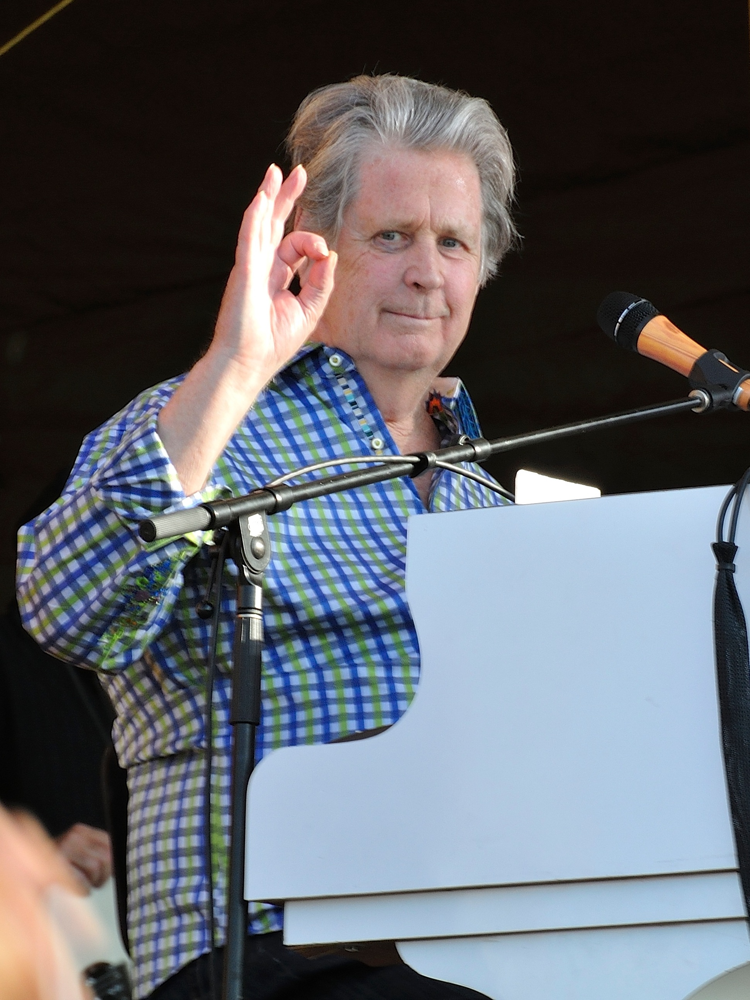

Brian Wilson
A musical genius

Brian Wilson signaling O.K. from the stage
Brian Douglas Wilson (born June 20, 1942) is an American musician, singer, songwriter, and record producer who co-founded the Beach Boys. After signing with Capitol Records in 1962, Wilson wrote or co-wrote more than two dozen Top 40 hits for the group.[1] In addition to his unorthodox approaches to pop composition and mastery of recording techniques, Wilson is known for his lifelong struggles with mental illness. He is often referred to as a genius[2] and is widely acknowledged as one of the most innovative and significant songwriters of the late 20th century.[3]